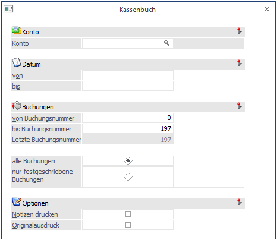
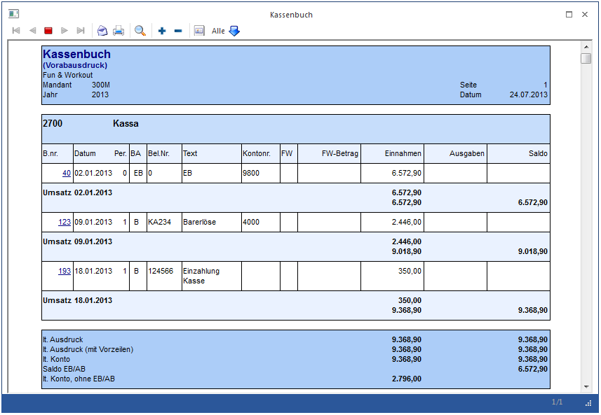

Die Auswertung des Kassenbuches findet im Menüpunkt…
1 WinLine FIBU
1 Auswertungen
1 Kassenbuch
… statt.

Ø Konto
Geben Sie an, welches Konto als Kassakonto ausgewertet werden soll. Es können nur jene Konten verwendet werden, die im Sachkontenstamm als "Zahlungsmittelkonto" geschlüsselt sind.
Ø Datum von / bis
Eingrenzung des Ausdrucks nach Datum.
Bei der Anzeige der Tagessummen werden bei der Einschränkung des Datums auch die Vorzeilen berücksichtigt.
Ø Buchungen
Eingrenzung des Ausdrucks nach der Prima Nota Nummer.
Zusätzlich wird die letzte vorhandene Buchungsnummer angezeigt.
Ø Notizen drucken
Bei Aktivieren der Checkbox werden auch die erweiterten Buchungstexte mit angedruckt (siehe dazu BUCHEN-DIALOG-STAPEL).
Ø Originalausdruck
Es werden alle Buchungen gedruckt, die das Kassenkonto betreffen und seit dem letzten Originalausdruck gebucht worden sind (Tages-Kassenjournal). Der Originalausdruck kann nur am Drucker ausgegeben werden. Alle Buchungen, die schon einmal mittels Originalausdruck ausgegeben werden, können nicht noch ein weiteres Mal ausgegeben werden. Im Originalausdruck werden automatisch immer nur die bereits festgeschriebenen Buchungszeilen berücksichtigt. Wenn das Formular "P01W55OR" vorhanden ist, wird dieses für den Originalausdruck herangezogen und gedruckt.
Hinweis
Wenn der Originalausdruck erfolgt, kann im Formular die Variable "0/0130 - Kassenbuchungsnummer" angedruckt werden, damit eine fortlaufende Buchungsnummer für die angezeigten Buchungen erfolgt. Diese fortlaufende Nummer wird beim nächsten Originalausdruck des Kassenbuchs pro Kassenkonto und Mandant weitergeführt. Nach einem Jahresabschluss wird diese fortlaufende Nummer wieder auf 0 gesetzt und beginnt somit im nächsten Jahr wieder mit 1.
Ø Alle Buchungen
Alle Buchungen werden (gemäß den sonstigen getroffenen Eingrenzungen) ausgegeben, d.h. wenn in den FIBU-Parametern (WinLine START/Optionen) eingestellt wurde, dass Buchungen - bis zum Zeitpunkt, an dem sie festgeschrieben werden - noch als Stapel geladen und editiert werden können, dann stehen bei dieser Option ALLE Buchungen (die bereits festgeschriebenen UND die noch vorläufigen Buchungen) für die Ausgabe zur Verfügung.
Ø Nur festgeschriebene Buchungen
Bei dieser Einstellung werden nur DIE Buchungen ausgegeben, die bereits im Menüpunkt
1 Buchen
1 Buchen
1 Buchungen festschreiben
als "definitiv" gekennzeichnet worden sind.
Hinweis
Im Kassenbuch werden sowohl beim Andruck der Buchungen, als auch bei den Summen die außerbücherlichen Salden (Buchungen mit einer Steuerzeile "Pagatorische Aufwände/Erlöse" aktiv) nicht berücksichtigt.
